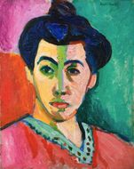
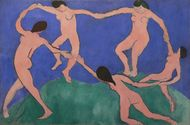
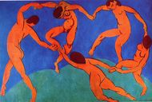
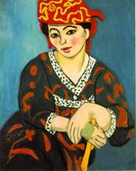

Master
piece
綠色條紋的馬諦斯夫人
畫中的女子就是馬諦斯的太太，在她的臉部中央，貫穿著一條極為醒目的綠色條紋。這種充滿浪漫氣息，以及有意驚世駭俗的叛逆手法，都出現在野獸派早期的許多作品當中。

舞者一

舞者二
第一眼看到這幅畫，就被它律動的節奏所吸引。舞者圍成了一個圓圈，強烈的對比色與舞者流暢的體態曲線使畫面舞動了起來。我喜歡馬諦斯筆下的人物瞬間動態，配上，強烈的對比色有一種奔放的韻律。

Madras Rouge


Master
piece
The River Seine at Chatou